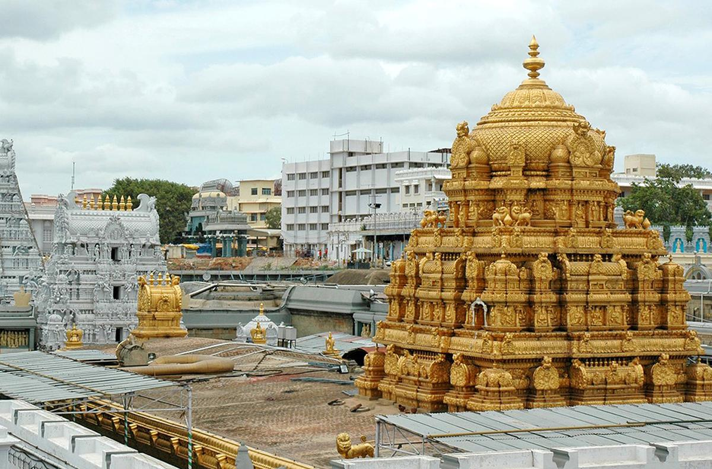
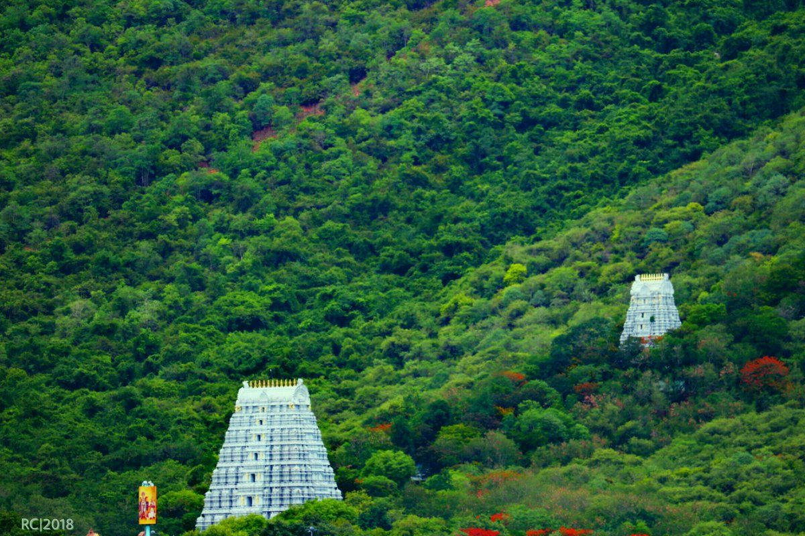
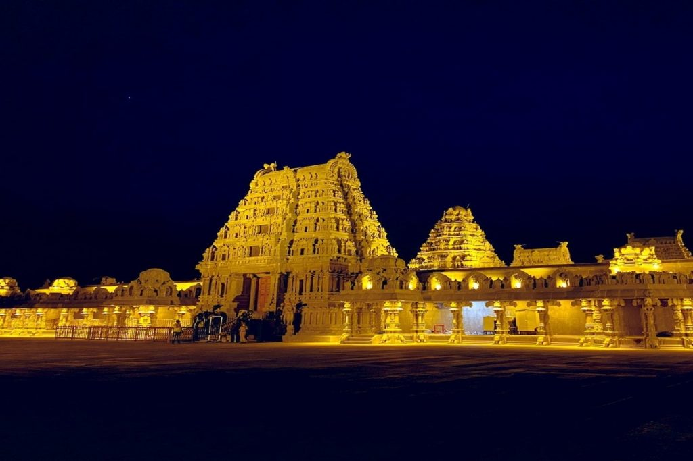
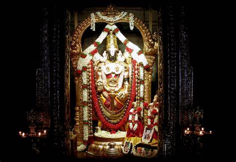
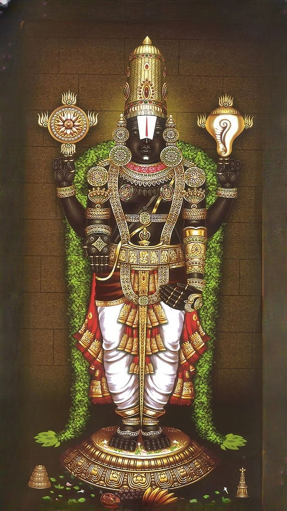

Visual Splendors






The Tirumala temple is a visual masterpiece, adorned with intricate carvings, golden gopurams, and vibrant decorations. Its architectural splendor, combined with the scenic beauty of the surrounding hills, creates an ambiance of divine majesty.